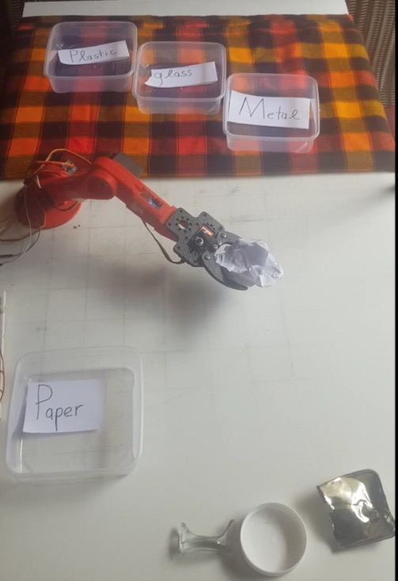
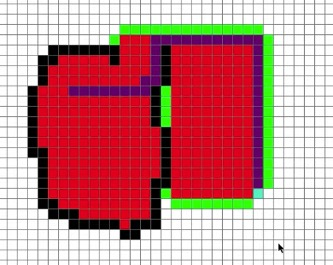

Autonomous waste-sorting robot
A robotic arm that identifies recyclable materials with a neural network and sorts them using inverse kinematics.
I build software and hardware for robotics, computer vision, and applied machine learning.


A robotic arm that identifies recyclable materials with a neural network and sorts them using inverse kinematics.

A Flask application that estimates what a used sedan might sell for using an XGBoost model.

A team-built hydrogen fuel-cell vehicle for the Shell Eco-marathon, with an Arduino-based controller.

An interactive Pygame tool for watching A* find a path around obstacles.